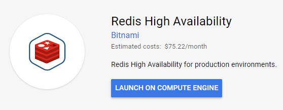
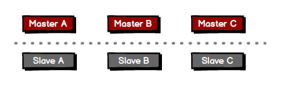

<!DOCTYPE html>
<html>
<head><meta name="generator" content="Hexo 3.8.0">
  <meta charset="utf-8">
  <title>Redis cluster on CentOs | The name is Alex</title>
  <meta name="viewport" content="width=device-width,initial-scale=1,maximum-scale=1,minimum-scale=1">
  <meta name="description" content="這次來記錄一下架設  Redis Cluster 的經過。因為有公司GCP的帳號，所以這次環境是放在 GCP VM 上。想說 Cloud Launcher 不是點一點就幫你把 Cluster 架好了嗎…. 但是並沒有那麼簡單的事。首先我信心滿滿的 Launch 了這個：  但是後來RD跟我說他們想要UAT上的 Redis 是 Cluster，這樣才比較接近 Production 的設定。但這個 R">
<meta name="keywords" content="redis">
<meta property="og:type" content="article">
<meta property="og:title" content="Redis cluster on CentOs">
<meta property="og:url" content="http://alexpacer.github.io/posts/ebf2f33a/index.html">
<meta property="og:site_name" content="The name is Alex">
<meta property="og:description" content="這次來記錄一下架設  Redis Cluster 的經過。因為有公司GCP的帳號，所以這次環境是放在 GCP VM 上。想說 Cloud Launcher 不是點一點就幫你把 Cluster 架好了嗎…. 但是並沒有那麼簡單的事。首先我信心滿滿的 Launch 了這個：  但是後來RD跟我說他們想要UAT上的 Redis 是 Cluster，這樣才比較接近 Production 的設定。但這個 R">
<meta property="og:locale" content="tw">
<meta property="og:image" content="http://alexpacer.github.io/posts/ebf2f33a/2018-04-27-16_13_35-redis-high-availability-_-google-cloud-launcher-sapsbk.png">
<meta property="og:image" content="http://alexpacer.github.io/posts/ebf2f33a/2018-04-27-16_25_28-assets-generation__redis-cluster-topo-assets-generation-x_documents_blog.png">
<meta property="og:updated_time" content="2019-10-02T03:53:13.153Z">
<meta name="twitter:card" content="summary">
<meta name="twitter:title" content="Redis cluster on CentOs">
<meta name="twitter:description" content="這次來記錄一下架設  Redis Cluster 的經過。因為有公司GCP的帳號，所以這次環境是放在 GCP VM 上。想說 Cloud Launcher 不是點一點就幫你把 Cluster 架好了嗎…. 但是並沒有那麼簡單的事。首先我信心滿滿的 Launch 了這個：  但是後來RD跟我說他們想要UAT上的 Redis 是 Cluster，這樣才比較接近 Production 的設定。但這個 R">
<meta name="twitter:image" content="http://alexpacer.github.io/posts/ebf2f33a/2018-04-27-16_13_35-redis-high-availability-_-google-cloud-launcher-sapsbk.png">
  <link rel="icon" href="/favicon.ico">
  

  <link rel="stylesheet" href="https://cdnjs.cloudflare.com/ajax/libs/bulma/0.6.1/css/bulma.min.css">
  <link rel="stylesheet" href="https://maxcdn.bootstrapcdn.com/font-awesome/4.7.0/css/font-awesome.min.css">
  <link rel="stylesheet" href="/css/style.css">
  
    <link rel="stylesheet" href="/css/prism.css">
  
  
<script type="application/ld+json">
  {
  "@context": "http://schema.org",
  "@type": "BlogPosting",
  "headline": "Redis cluster on CentOs",
  "name": "Redis cluster on CentOs",
  "datePublished": "2018-04-27T09:12:41.000Z",
  "dateModified": "2019-10-02T03:53:13.153Z",
  "mainEntityOfPage": {
    "@type": "WebPage",
    "@id": "http://alexpacer.github.io/posts/ebf2f33a/index.html"
  },
  "author": {
    "@type": "Person",
    "name": "Alex Wei",
    "image": "/images/avatar.jpg"
  },
  "publisher": {
    "@type": "Organization",
    "name": "Alex Wei",
    "logo": {
      "@type": "ImageObject",
      "url": "/images/avatar.jpg"
    }
  }
}
</script>

  
  
    <script src="/js/prism.js"></script>
  
  <!-- <link href="/css/prism.css" rel="stylesheet" /> -->
  <link href="/css/prism-line-numbers.css" rel="stylesheet">
<link rel="stylesheet" href="/css/prism-twilight.css" type="text/css"></head>
</html>
<body>
  

  <header class="navbar" role="navigation" aria-label="main navigation">
  <div class="navbar-brand">
    <a href="/" class="navbar-item">
      The name is Alex
    </a>
  </div>
</header>

  <div class="container">
    <div class="columns">
      <div class="main column is-8">
        <article class="post">
  <figure class="post-thumbnail">
    

  </figure>
  <span>2018-04-27
</span>
  <h1 class="title">Redis cluster on CentOs</h1>
  
  <div class="tags">
    
      <a class="tag" href="/tags/redis/">redis</a>
    
  </div>


  <div class="content">
    <p>這次來記錄一下架設  Redis Cluster 的經過。因為有公司GCP的帳號，所以這次環境是放在 GCP VM 上。想說 Cloud Launcher 不是點一點就幫你把 Cluster 架好了嗎…. 但是並沒有那麼簡單的事。首先我信心滿滿的 Launch 了這個：</p>
<p></p>
<p>但是後來RD跟我說他們想要UAT上的 Redis 是 Cluster，這樣才比較接近 Production 的設定。但這個 Redis HA 是幫你 Launch  Master/Slave 的 Replication Set。</p>
<p>首先上網研究了一下 Redis Cluster 到底長什麼樣子，理解下來大概是這樣：</p>
<p></p>
<p>由成雙的 Master/Slave 組成的 Cluster，每一個 Node 可以透過Node 設定好的 Port 前綴加1 互相溝通 (i.e. 6379 -&gt; 16379 )</p>
<p><a href="https://redis.io/topics/cluster-tutorial" target="_blank" rel="noopener">官網建議</a>最少 Cluster 是 6 輛</p>
<pre class=" language-markdown"><code class="language-markdown">Note that the minimal cluster that works as expected requires to contain at least three master nodes.
</code></pre>
<hr>
<p>由於時間緊迫，不得已只好自己開VM來架 Cluster。選擇了比較熟悉的 CentOS7，先將 Redis 裝起來</p>
<pre class=" language-bash"><code class="language-bash">$ <span class="token function">sudo</span> yum -y update
$ <span class="token function">sudo</span> yum <span class="token function">install</span> redis -y
$ <span class="token function">sudo</span> vim /etc/redis.config
</code></pre>
<p>這邊需要設定 Redis 要作為 Cluster 的組態。因為 Redis Cluster 設定時會讓你選擇誰是 Master 誰是 Slave, 所以 <code>redis.conf</code> 裡不需要設定 <code>slaveof</code></p>
<p>大致上的設定是這樣的：</p>
<pre class=" language-nginx"><code class="language-nginx">port <span class="token number">6379</span>
bind <span class="token number">0.0</span><span class="token punctuation">.</span><span class="token number">0.0</span>
cluster<span class="token operator">-</span>enabled yes
cluster<span class="token operator">-</span>config<span class="token operator">-</span>file nodes_6379<span class="token punctuation">.</span>conf
cluster<span class="token operator">-</span>node<span class="token operator">-</span><span class="token keyword">timeout</span> <span class="token number">15000</span>
appendonly yes
</code></pre>
<p>六台都一樣，然後要啟動了</p>
<pre class=" language-bash"><code class="language-bash">$ <span class="token function">sudo</span> systemctl start redis.service
</code></pre>
<p>啟動後看看狀況</p>
<pre class=" language-bash"><code class="language-bash">$ <span class="token function">sudo</span> systemctl status redis.service
● redis.service - Redis persistent key-value database
Loaded: loaded <span class="token punctuation">(</span>/usr/lib/systemd/system/redis.service<span class="token punctuation">;</span> disabled<span class="token punctuation">;</span> vendor preset: disabled<span class="token punctuation">)</span>
Drop-In: /etc/systemd/system/redis.service.d
└─limit.conf
Active: active <span class="token punctuation">(</span>running<span class="token punctuation">)</span> since Fri 2018-04-27 06:12:30 UTC<span class="token punctuation">;</span> 4s ago
Main PID: 12254 <span class="token punctuation">(</span>redis-server<span class="token punctuation">)</span>
CGroup: /system.slice/redis.service
└─12254 /usr/bin/redis-server 127.0.0.1:6379
</code></pre>
<p>都啟動後就可以來準備架設 Cluster了</p>
<p>首先你需要 Ruby。Redis 的 Github source 有付可以幫你設定 Cluster 的 Script <code>./redis-trib.rb</code>；是用 Ruby 寫的。(<em>需要注意的是，我在 GCP 上 create 的這個 CentOS7 Ruby 版本是 2.0.0, 但要執行 <code>./redis-trib.rb</code> 需要 2.2 以上的 Ruby。</em>)</p>
<blockquote>
<p>所以我需要先 Upgrade Ruby。</p>
</blockquote>
<p>接下來就是到 <a href="https://github.com/antirez/redis" target="_blank" rel="noopener">Github Redis Repository</a> 去把 Source Clone 下來 (官網本來是說， <code>gem install redis</code> 會放在 Utils 資料夾，但找來找去找不到，可能後來的版本就不附了)。</p>
<p>找到 <code>./redis-trib.rb</code> 後，確認一下六台主機的 ip (因為我bind 0.0.0.0) 是否正確並且 Redis 有啟動後。用下列指令來設定 Cluster</p>
<pre class=" language-bash"><code class="language-bash">$ ./redis-trib.rb create --replicas 1 10.140.0.10:6379 10.140.0.11:6379 10.140.0.12:6379 10.140.0.13:6379 10.140.0.14:6379 10.140.0.15:6379
<span class="token operator">>></span><span class="token operator">></span> Creating cluster
<span class="token operator">>></span><span class="token operator">></span> Performing <span class="token function">hash</span> slots allocation on 6 nodes<span class="token punctuation">..</span>.
Using 3 masters:
10.140.0.10:6379
10.140.0.11:6379
10.140.0.12:6379
Adding replica 10.140.0.13:6379 to 10.140.0.12:6379
Adding replica 10.140.0.14:6379 to 10.140.0.10:6379
Adding replica 10.140.0.15:6379 to 10.140.0.11:6379

M: ac14f4b6c395cfd7e715f901a4c726ffa0198273 10.140.0.10:6379
slots:0-5460 <span class="token punctuation">(</span>5461 slots<span class="token punctuation">)</span> master
M: 9bba60c982771ed8945caae0a4469f10615ddce4 10.140.0.11:6379
slots:5461-10922 <span class="token punctuation">(</span>5462 slots<span class="token punctuation">)</span> master
M: 32bf455e14e41ef3eb94ca27d0180b0164334cea 10.140.0.12:6379
slots:10923-16383 <span class="token punctuation">(</span>5461 slots<span class="token punctuation">)</span> master
S: b9eb6df267af707365282f641f66d36dcb1a25bc 10.140.0.13:6379
replicates 32bf455e14e41ef3eb94ca27d0180b0164334cea
S: e263026d609aa02c7dc845c287fc26ca7f4650d1 10.140.0.14:6379
replicates ac14f4b6c395cfd7e715f901a4c726ffa0198273
S: aeaacfed42bf7754f545abde642cf01380604ca4 10.140.0.15:6379
replicates 9bba60c982771ed8945caae0a4469f10615ddce4
Can I <span class="token keyword">set</span> the above configuration? <span class="token punctuation">(</span>type <span class="token string">'yes'</span> to accept<span class="token punctuation">)</span>:
</code></pre>
<p>設定 Master/Slave 配對的結構會如上顯示給確認。如果沒什麼問題的話，輸入 <code>yes</code></p>
<pre class=" language-bash"><code class="language-bash"><span class="token operator">>></span><span class="token operator">></span> Nodes configuration updated
<span class="token operator">>></span><span class="token operator">></span> Assign a different config epoch to each node
<span class="token operator">>></span><span class="token operator">></span> Sending CLUSTER MEET messages to <span class="token function">join</span> the cluster
Waiting <span class="token keyword">for</span> the cluster to join<span class="token punctuation">..</span>
<span class="token operator">>></span><span class="token operator">></span> Performing Cluster Check <span class="token punctuation">(</span>using node 10.140.0.10:6379<span class="token punctuation">)</span>
<span class="token punctuation">..</span><span class="token punctuation">..</span><span class="token punctuation">..</span><span class="token punctuation">..</span>
<span class="token punctuation">..</span><span class="token punctuation">..</span><span class="token punctuation">..</span>

<span class="token punctuation">[</span>OK<span class="token punctuation">]</span> All nodes agree about slots configuration.
<span class="token operator">>></span><span class="token operator">></span> Check <span class="token keyword">for</span> <span class="token function">open</span> slots<span class="token punctuation">..</span>.
<span class="token operator">>></span><span class="token operator">></span> Check slots coverage<span class="token punctuation">..</span>.
<span class="token punctuation">[</span>OK<span class="token punctuation">]</span> All 16384 slots covered.
</code></pre>
<p>醬就差不多設定好了。</p>
<p>其實好像沒那麼麻煩。麻煩的是準備六輛 VM…. 但對 GCP 其實也沒很熟，應該有更快生 VM 出來的方式。但這次就先處理到這裡好了。</p>

  </div>
  
<nav class="footer-nav">
  
    <div class="footer-nav__prev">
      <div class="footer-nav__label">
        較新的那篇
      </div>
      <a href="/posts/17bf5966/">
        Windows Server 安裝 RabbitMQ
      </a>
    </div>
  
  
    <div class="footer-nav__next">
      <div class="footer-nav__label">
        較舊的那篇
      </div>
      <a href="/posts/761f59e/">
        智付通金流整合
      </a>
    </div>
  
</nav>


</article>


<div id="disqus_thread"></div>


      </div>
      <div class="sidebar column is-4">
        <aside>
  
    <aside class="search widget">
  <form action="//google.com/search" method="get" accept-charset="UTF-8" class="search-form" target="_blank">
    <div class="control has-icons-right">
      <input type="search" name="q" class="input" placeholder="搜尋">
      <span class="icon is-small is-right">
        <i class="fa fa-search"></i>
      </span>
    </div>
    <input type="hidden" name="sitesearch" value="http://alexpacer.github.io">
  </form>
</aside>

  
    <div class="widget-wrap">
  <div class="widget-title">作者</div>
  <aside class="profile media widget">
    <figure class="profile-avatar media-left">
      
    </figure>
    <div class="media-content">
      <p>
        <strong>
          <span>Alex Wei</span>
          <span class="icon">
            <a href="https://github.com/alexpacer" target="_blank">
              <i class="fa fa-github"></i>
            </a>
          </span>
        </strong>
        <br>
        <span></span>
      </p>
    </div>
  </aside>
</div>

  
    
  <div class="widget-wrap">
    <div class="widget-title">最近更新</div>
    <div class="widget">
      <ul class="recent-post">
        
          <li class="recent-post-item media">
            <figure class="media-left">
              

            </figure>
            <div class="media-content">
              <p class="">
                <a href="/posts/af2d802f/" class="">
                  Actor Model - 聊聊對 Actor Model 的理解
                </a>
              </p>
              <p class="">
                <small>
                  2019-10-17

                </small>
              </p>
            </div>
          </li>
        
          <li class="recent-post-item media">
            <figure class="media-left">
              

            </figure>
            <div class="media-content">
              <p class="">
                <a href="/posts/d974dd78/" class="">
                  WebDeployment 的一些前置設定
                </a>
              </p>
              <p class="">
                <small>
                  2019-06-21

                </small>
              </p>
            </div>
          </li>
        
          <li class="recent-post-item media">
            <figure class="media-left">
              

            </figure>
            <div class="media-content">
              <p class="">
                <a href="/posts/904aaacf/" class="">
                  ASP.net Core (2.2) 整理 1 :: [Auth &amp; Authorize]
                </a>
              </p>
              <p class="">
                <small>
                  2019-02-14

                </small>
              </p>
            </div>
          </li>
        
          <li class="recent-post-item media">
            <figure class="media-left">
              

            </figure>
            <div class="media-content">
              <p class="">
                <a href="/posts/17bf5966/" class="">
                  Windows Server 安裝 RabbitMQ
                </a>
              </p>
              <p class="">
                <small>
                  2018-12-12

                </small>
              </p>
            </div>
          </li>
        
          <li class="recent-post-item media">
            <figure class="media-left">
              

            </figure>
            <div class="media-content">
              <p class="">
                <a href="/posts/ebf2f33a/" class="">
                  Redis cluster on CentOs
                </a>
              </p>
              <p class="">
                <small>
                  2018-04-27

                </small>
              </p>
            </div>
          </li>
        
      </ul>
    </div>
  </div>


  
    
  <div class="widget-wrap">
    <h3 class="widget-title">標籤雲</h3>
    <div class="widget">
      <a href="/tags/net/" style="font-size: 10px;">.net</a> <a href="/tags/IIS/" style="font-size: 10px;">IIS</a> <a href="/tags/WebDeploy/" style="font-size: 10px;">WebDeploy</a> <a href="/tags/actor-model/" style="font-size: 10px;">actor-model</a> <a href="/tags/asp-net-core/" style="font-size: 10px;">asp.net-core</a> <a href="/tags/elk/" style="font-size: 10px;">elk</a> <a href="/tags/nginx/" style="font-size: 10px;">nginx</a> <a href="/tags/rabbit-mq/" style="font-size: 10px;">rabbit-mq</a> <a href="/tags/rails/" style="font-size: 20px;">rails</a> <a href="/tags/redis/" style="font-size: 10px;">redis</a> <a href="/tags/ruby/" style="font-size: 10px;">ruby</a> <a href="/tags/unit-testing/" style="font-size: 10px;">unit-testing</a> <a href="/tags/windows/" style="font-size: 10px;">windows</a>
    </div>
  </div>


  
    
  <div class="widget-wrap">
    <h3 class="widget-title">封存</h3>
    <div class="widget">
      <ul class="archive-list"><li class="archive-list-item"><a class="archive-list-link" href="/archives/2019/10/">October 2019</a><span class="archive-list-count">1</span></li><li class="archive-list-item"><a class="archive-list-link" href="/archives/2019/06/">June 2019</a><span class="archive-list-count">1</span></li><li class="archive-list-item"><a class="archive-list-link" href="/archives/2019/02/">February 2019</a><span class="archive-list-count">1</span></li><li class="archive-list-item"><a class="archive-list-link" href="/archives/2018/12/">December 2018</a><span class="archive-list-count">1</span></li><li class="archive-list-item"><a class="archive-list-link" href="/archives/2018/04/">April 2018</a><span class="archive-list-count">1</span></li><li class="archive-list-item"><a class="archive-list-link" href="/archives/2017/12/">December 2017</a><span class="archive-list-count">2</span></li><li class="archive-list-item"><a class="archive-list-link" href="/archives/2017/06/">June 2017</a><span class="archive-list-count">4</span></li></ul>
    </div>
  </div>


  
    <div class="widget-wrap">
    <h3 class="widget-title">連結</h3>
    <div class="widget">
        <ul style="list-style: circle">
            <li>
                <a href="https://blog.ryantseng.me/" class="">
                    Ryan - 不務正業 全端 開發記事
                </a>
            </li>

            <li>
                <a href="https://eugenesu0515.github.io/Blog/" class="">
                    Eugene
                </a>
            </li>
        </ul>
    </div>
</div>

  
</aside>

      </div>
    </div>
  </div>
  <footer class="footer">
  <div class="container">
    <div class="content has-text-centered">
      <p>
        <a rel="license" href="http://creativecommons.org/licenses/by-nc/4.0/"></a><br>This blog is licensed under a <a rel="license" href="http://creativecommons.org/licenses/by-nc/4.0/">Creative Commons Attribution-NonCommercial 4.0 International License</a>.


        <!--
          <br />
          <span xmlns:cc="http://creativecommons.org/ns#" property="cc:attributionName">Alex Wei</span>'s Workを著作者とするこの作品は<a rel="license" href="http://creativecommons.org/licenses/by-sa/4.0/">クリエイティブ・コモンズの 表示 - 継承 4.0 国際 ライセンス</a>で提供されています。 -->
      </p>
    </div>
  </div>
</footer>


  <script>
    var disqus_shortname = 'the-name-is-alex';
    
    var disqus_url = 'http://alexpacer.github.io/posts/ebf2f33a/';
    
    (function(){
      var dsq = document.createElement('script');
      dsq.type = 'text/javascript';
      dsq.async = true;
      dsq.src = '//go.disqus.com/embed.js';
      (document.getElementsByTagName('head')[0] || document.getElementsByTagName('body')[0]).appendChild(dsq);
    })();
  </script>


  
</body>
</html>
